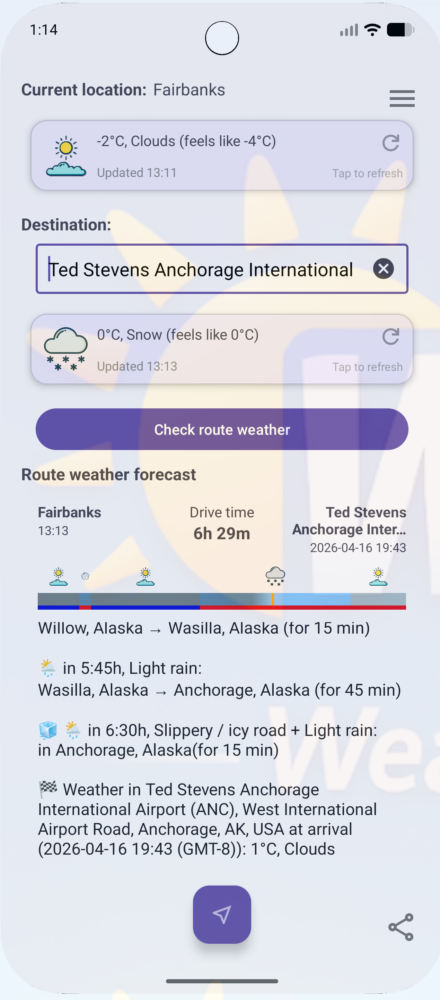

Avoid the Storm
Most weather apps only show conditions at your destination. **WeatherRoute: Safer Navigation** provides a comprehensive forecast along your entire path, letting you avoid heavy rain, snow, and dangerous winds before you even start your engine.
Key Features
- Route-Specific Forecasts: Real-time conditions for your exact path.
- Weather Scoring: Instantly compare routes based on safety and visibility.
- Arrival Conditions: Know exactly what to expect when you pull in.
- Seamless Import: Works with your favorite navigation apps.
- Dark Mode: Optimized for safety during night-time driving.